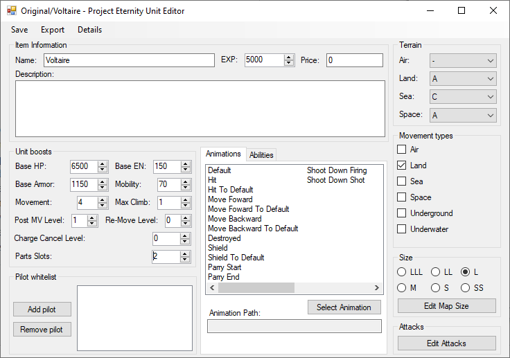

Normal Unit Editor
You can adjust the stats of your units here, number of parts, pick the terrain bonuses, where its allowed to go, abilities, sprites and its attacks.
For a more in depth guide, go
hereName: The name that will be used in game, you can have multiple units with the same name. You can use this to have multiple versions of the same unit with different stats.
Base HP: The maximum hit points the unit has. While playing, various effects can increase its max HP but it will always revert back to this value when the map is over.
Base EN: The maximum EN the unit has. Some attacks require EN to be used.
Base Armor: Flat base damage reduction. 1000 armor will reduce the damage of incoming attack by 1000. The final damage reduction will slightly alter this value bases on pilot stats, terrain and other bonuses.
Mobility: Flat base evasion, 100 mobility will reduce the chances of being hit by 100%. As such an attack with 150% accuracy with only have a real 50% of hitting. The final evasion rate is affected by the pilot, terrain and other bonuses.
Movement: How many tiles can the unit traverse per turn. The actual distance can vary based on the terrain rank or if flying.
Max Climb: Only useful if the map has terrain elevation. More details in the guide.
Post MV: Allow to use attacks that support post MV after moving. Leave it to 1 as default as it used for more advanced features. More details in the guide.
Re-Move: Allow to move after attacking is there are unused movement points left. Leave it as 0 to keep it disabled. More details in the guide.
Charge Cancel: Allow chargeable attack to be canceled. More details in the guide.
Part Slots: How many parts the unit is able to equip. 2 is the average with 4 considered the maximum before it start being impossible to balance.
Pilot whitelist: Only allow certain character to pilot this unit.
Animations: If you want to use animations, you really only need to pick one for Default. Everything is filled by default with the logic of “folder name/file name/animation”, as such for Voltaire in this example it would already be set to “Original/Voltaire/Default”. More details in the guide and in animation section of the tutorial.
Abilities: Select passive abilities for the unit.
Terrain: Decide the terrain ranks for the unit.
Movement types: Decided where the unit is allowed to go.
Size: Give a size to the unit, it is mostly used for calculating damage where bigger units do more damage and take less damage. You can also change the size of the unit on the map to be bigger than 1 tile.